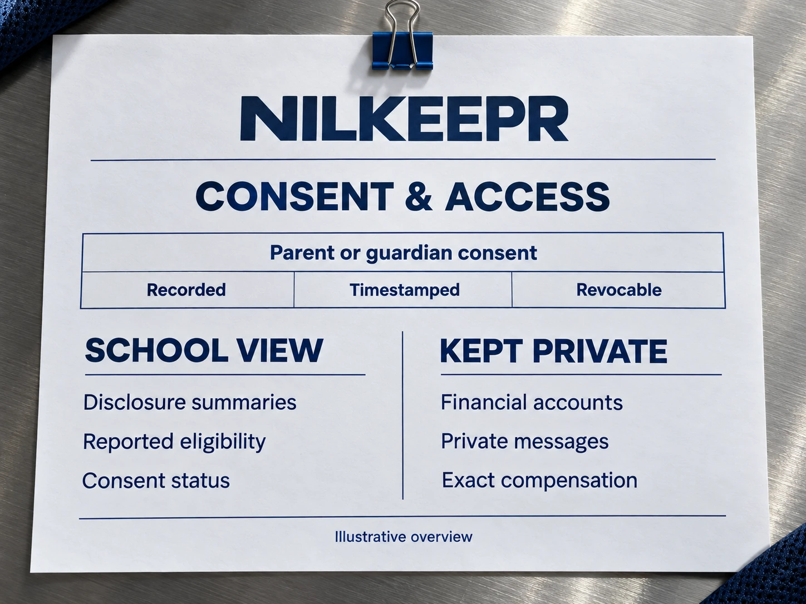
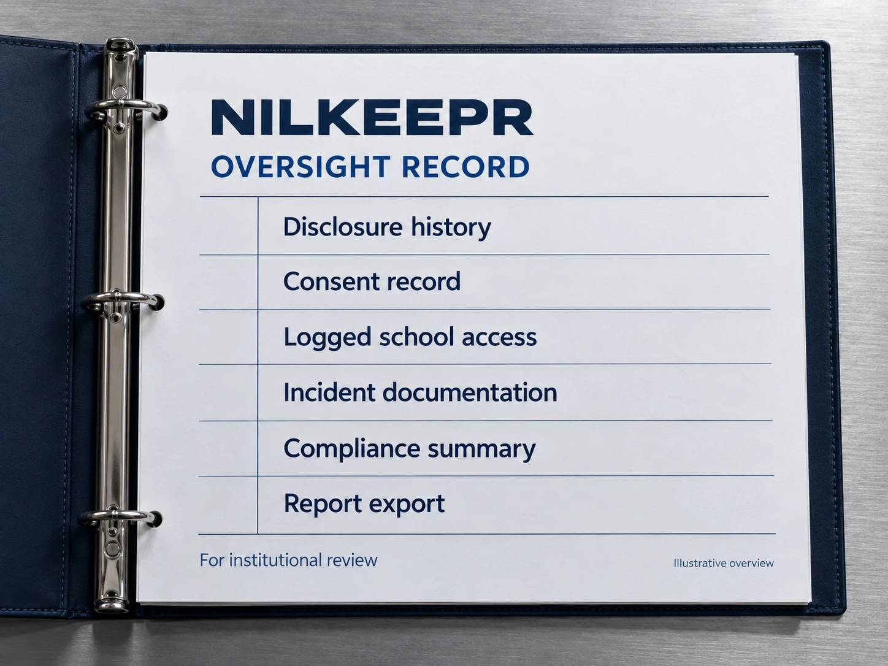

Start with your program.
- School compliance dashboard
- NIL disclosure monitoring
- Audit-ready documentation
- Dedicated onboarding support
Annual institutional licensing
Discuss school licensing[ ONE CONNECTED RECORD ]
DISTINCT RESPONSIBILITIES. A SHARED UNDERSTANDING.
Capabilities
Relevant information, brought together for a clearly defined school role.
Start with student-reported information.
Disclosures
NIL activity summaries, reported eligibility, school and class year, and disclosure history give school users relevant context.
Read the platform overview
Recorded. Timestamped. Revocable.
Consent
For minors, parent or guardian consent supports the school view. Parents can review what is visible and revoke consent.
Read the platform overview
Visibility without managing the deal.
School access
Authorized school users receive a read-only view. Schools do not edit disclosures, negotiate deals, or approve opportunities.
Read the platform overview
Keep context connected to the record.
Audit history
Timestamped disclosure history and logged school access support institutional review and documentation.
Read the platform overview
Bring information into review.
Reports
Compliance summaries, incident documentation and report exports help schools organize the information they are permitted to see.
Read the platform overviewThe workflow
Follow the responsibility of each participant. The school observes; the athlete and guardian remain central.
[ INFORMATION WITH CONTEXT ]
Institutional licensing
Discuss scope, access and institutional needs with the school team.
Questions
Know the scope, the boundaries and the next step.
No. NILKEEPR describes school access as read-only oversight. The school does not edit disclosures or manage the athlete’s deal.
Disclosure summaries, reported eligibility and consent status, along with relevant documentation and history.
Private communications, financial accounts and exact compensation are outside the school view.
For minors, consent is recorded, timestamped and revocable. See Data & consent for the detailed explanation.
Contact schools@nilkeepr.net or request a demo through the contact page.
[ KNOW THE BOUNDARIES ]
Clear information about the platform, consent and communication.
Explore data & consent